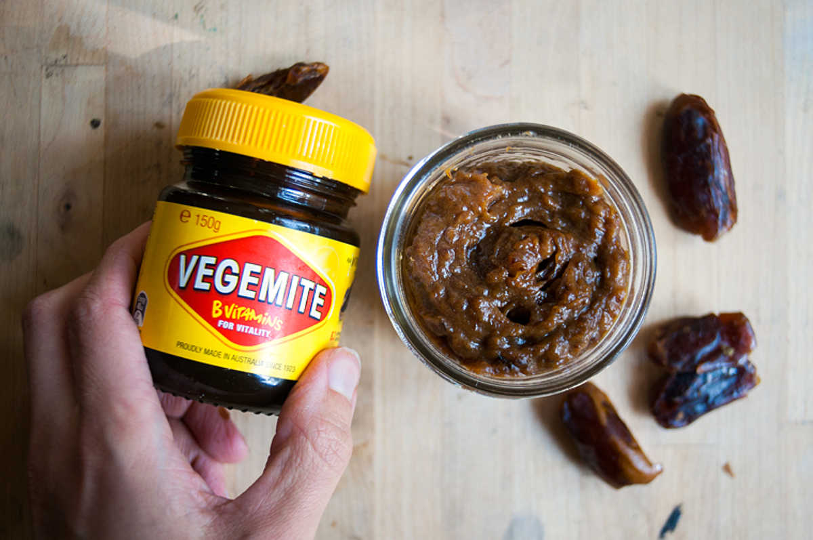

vegemite caramel
250 ml — 20 minutes
Vegemite is very salty, and we thought it would pair well with something sweet.
We used deglet noor dates for this recipe, but feel free to use medjool dates instead. Medjool dates are great, but expensive, and their cheaper counterpart works just fine. The added soy milk helps cut the salty/sweet of the mixture.
 deglet noor dates150 g
deglet noor dates150 g vegemite7 g
vegemite7 g lemon juice5 ml
lemon juice5 ml soy milk45 ml
soy milk45 ml vanilla extract5 ml
vanilla extract5 ml
caramel
- Soak 150 g (1 cup) chopped of deglet noor dates in boiling water for 5-10 minutes. Drain.
- Mix dates with the following ingredients - 7 ml (1 1/2 tsp) of vegemite, 5 g (1 tsp) of lemon juice, 45 ml (3 tbsp) of soy milk and 5 ml (1 tsp) of vanilla extract.
- Blend to a smooth purée using a hand mixer or food processor. Serve as a dip for apple slices!